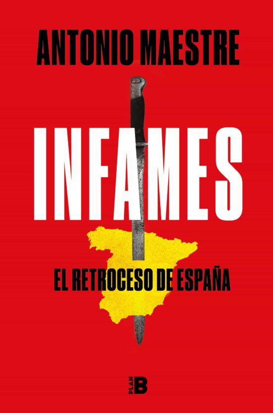
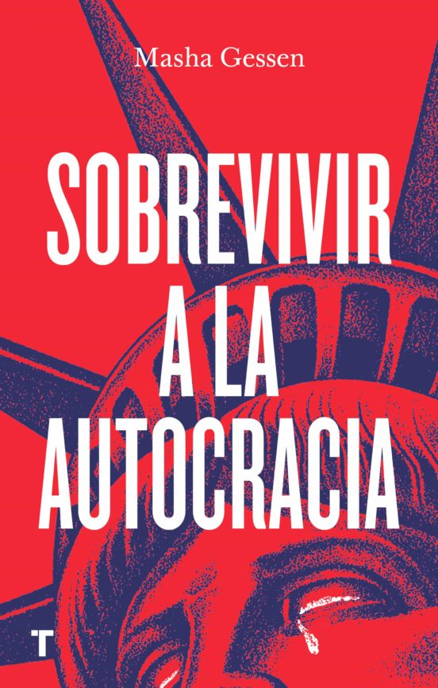

CATEGORÍA HISTORIA
-

LA FAMILIA FRANCO S.A
MARIANO SÁNCHEZ SOLER
La familia Franco S. A. es la última y más completa investigación sobre el entorno familiar del general Franco. La familia Franco S.A. es un trayecto financiero‑personal que abarca desde que se forjó la familia, a principios del siglo XX, hasta la España democrática de 2019. Este libro de investigación relata con rigor el aspecto más desconocido de la historia del clan Franco: los negocios secretos, el modo en que amasaron su fortuna partido del simple sueldo del general, el holding empresarial forjado alrededor de El Pardo, los oscuros manejos de los testaferros, los escándalos profesionales, la caza furtiva… En 2019, la saga familiar de quien fue el hombre más poderoso de España ha perdido su brillo social de antaño, pero ha adquirido una gran notoriedad política y jurídica por su oposición a la exhumación de los restos de Franco del Valle de los Caídos. La muerte de Carmen Franco ha destapado el origen y los avatares de la fortuna familiar, amasada en plena dictadura y consolidada en democracia.
ver más -
VOLVEREMOS Y SEREMOS MILLONES
EVO MORALES AYMA
A mediados de noviembre de 2019, un golpe de Estado conmovió a América Latina y al mundo. Evo Morales había renunciado por el acuartelamiento de la Policía y la presión de las Fuerzas Armadas. Caía el Presidente democrático que gobernó Bolivia por más tiempo y con él concluía el ciclo de mayor prosperidad económica y social que conoció el país en doscientos años de historia. Este libro es un extraordinario testimonio histórico. Evo Morales narra y deja al descubierto la anatomía de un golpe de Estado: el ajedrez político interno y la insurrección de fuerzas y grupos que veían su poder menoscabado por los éxitos del socialismo en el gobierno, la injerencia de los Estados Unidos, los detalles desconocidos sobre cómo salió de su país primero hacia México y después a la Argentina ante el riesgo cierto e inminente de un magnicidio y la solidaridad de líderes continentales como los presidentes Andrés Manuel López Obrador y Alberto Fernández.
ver más -

INFAMES. EL RETROCESO DE ESPAÑA
ANTONIO MAESTRE
¿QUIENES HAN IMPEDIDO EL PROGRESO DE ESPAÑA? ¿Que tienen en común Quim Torra y Santiago Abascal? ¿O Javier Negrete y Adorno con Melitón Manzanas? ¿O incluso Enrique Plá y Deniel y Isabel Díaz Ayuso? La respuesta es sencilla: todos ellos han arrastrado a España al retroceso más profundo. La historia de nuestro país está plagada de personajes que, por omisión, ideología o simplemente por razones perversas, han dejado una oscura huella en la nación. A traves de una investigación profunda y de una pluma impecable, el periodista Antonio Maestre nos lleva a un viaje por la maldad y la desidia, un hilo negro trazado desde la invasión francesa hasta los años grises del franquismo, el terrorismo, el nacionalismo, la corrupción y las miserias de la lucha política actual.
ver más -

SOBREVIVIR A LA AUTOCRACIA
MASHA GESSEN
Eran las elecciones de 2016 y el discurso, los gestos y los comentarios de uno de los candidatos a la presidencia de Estados Unidos no tenían precedente alguno. Cuarenta y ocho horas antes de que Donald Trump fuese elegido como presidente de Estados Unidos, el ensayo "Autocracia: reglas para la supervivencia", de Masha Gessen, se volvió viral. Hoy ese ensayo, ampliado y matizado, es este libro. Gessen aporta aquí una perspectiva inigualable, herencia de su infancia soviética y de más de dos décadas de testimoniar el totalitarismo ruso. Todo ello le otorga una cosmovisión única a la hora de analizar las líneas que delimitan la autocracia galopante que vive hoy Estados Unidos. Este libro, polémico e incisivo, analiza cómo esta organización política atraviesa todos los ámbitos (el mediático, el cultural, el judicial…) y termina por afectar a toda una sociedad, abocada a sobrevivir a las órdenes de un único individuo. "El ideal platónico del trumpiano libro anti-; Trump", Carlos Lozada, The Washington Post.
ver más